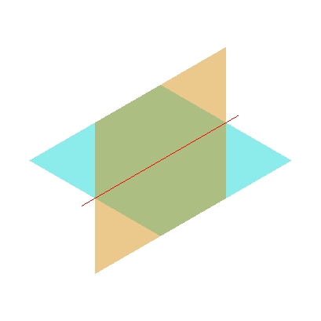

远端已有题目，仅补充替代 Windows 环境证据
两张无限延伸的平面应相交成一条直线。该 issue 已在远端注册，本轮只补充本地复核证据。
图片来自真实 OCCT DRAW 视口；不是生成的示意图。 图中只显示无界曲面的有限窗口；测试仍是无界输入。

| 角色 | 案例 | 结果 |
|---|---|---|
| B | original | algorithm_exception |
| B | neighbor_shift | algorithm_exception |
| B | neighbor_rotate | algorithm_exception |
| B | regression | pass |
| F | original | pass |
| F | neighbor_shift | pass |
| F | neighbor_rotate | pass |
| F | regression | pass |
| negative_output_injection | original | assertion_fail |
这些日志运行的是此前构造的 OCE 替代基线及对应移植参考，不是仓库现有 source_id 的正式重放。因此不改写该题已有清单、基线、suite 或历史成绩。
Linux 缓存、构建与沙箱验证尚未完成。新增条目设置 pending_requirements，不能把本页结果当成正式准入。23985、23998 的支撑／覆盖与 29038 的完整布尔语义也保留待补。
Windows 数值断言运行使用 B/F 相同的浮点陷阱屏蔽兼容设置，未放宽数值容差。